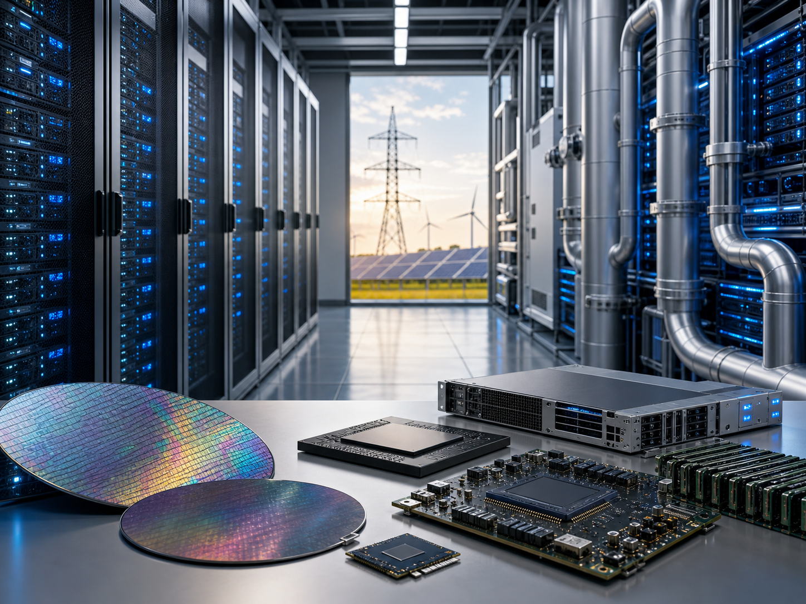

标普500
7,445.72
+0.2%

本期重点跟踪全球隔夜市场、中国A股、美股与港股，并结合政策、地缘政治、产业动态和资金面，给出今日值得关注的板块方向。
风险偏好修复，但油价、美债收益率和地缘事件仍是今日定价锚。
美股小幅收高，市场从油价高位回落中获得喘息。标普500、道指和纳指分别上涨0.2%、0.6%和0.1%。
油价回落 → 美债压力缓和 → 成长股估值修复；若油价再上冲，则这条链条会快速反向。
A股看承接，美股看AI业绩，美股中概与港股科技情绪相互牵引。
昨日A股高开低走，三大指数均跌超2%，两市成交约3.48万亿元。半导体、算力硬件、CPO、存储器和光伏等强势方向集中调整。
英伟达Q1 FY2027收入816亿美元、数据中心收入752亿美元，继续验证AI资本开支周期，但股价反应偏冷，显示预期已经较高。
恒指跌1.03%，恒生科技指数跌2.15%。腾讯与中资金融、石油股多数走弱，联想业绩为AI PC和服务器链提供新催化。
AI基础设施仍是跨市场共同主线，但交易从叙事进入利润验证。

以下为关注方向，不构成投资承诺或个股买卖建议。
| 市场 | 重点关注 | 关注理由 | 主要风险 |
|---|---|---|---|
| A股 | 红利央企、大金融、国产半导体、CPO、PCB、液冷、存储、智能驾驶、机器人、充电设施 | 政策支撑仍在，昨日放量下跌后优先观察承接；科技主线若企稳，可能从普跌转入分化修复。 | 科技高位筹码松动，美债和油价反复，指数二次探底。 |
| 美股 | AI基础设施、半导体设备、存储、数据中心电力、优质金融 | 英伟达财报继续确认AI需求，但交易重点从增长想象转向利润兑现与现金回报。 | 估值偏高，油价反弹，新Fed主席释放更鹰派缩表信号。 |
| 港股 | 恒生科技、AI PC/服务器链、互联网平台、高股息金融电信、部分能源股 | 估值仍有弹性，联想业绩提供AI硬件催化，南向资金承接是短线情绪关键。 | 中概情绪拖累，科技股业绩预期下修，地缘油价扰动。 |
今日最重要的是观察风险变量是否继续缓和，而不是只看指数红绿。
市场短线不是缺少题材，而是需要确认风险变量是否继续降温。今日策略上更适合把“确定性”和“承接质量”放在第一位。
本样例报告使用公开来源整理，未来自动化会按当天最新信息重新生成。